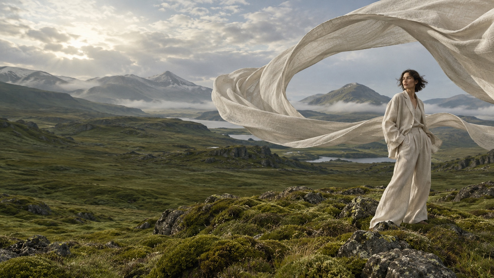
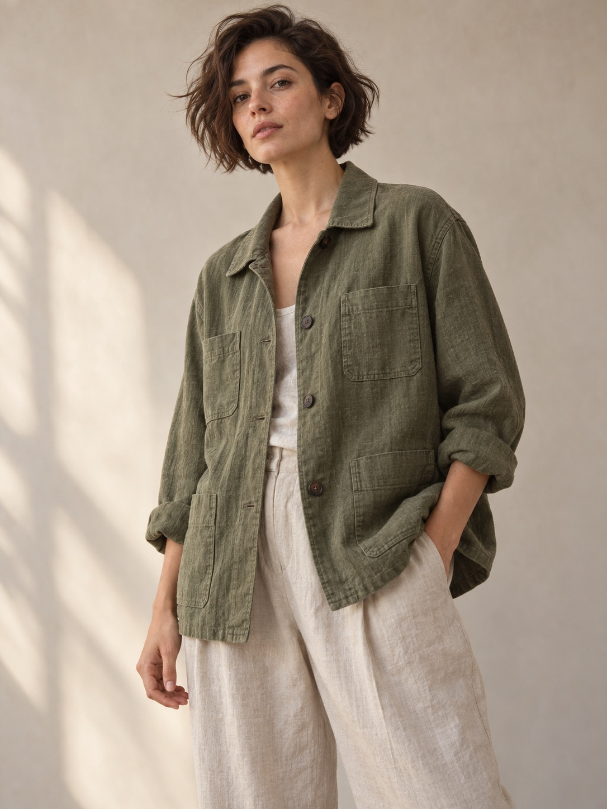

Changing the world
suits you.
Clothes made from natural materials.
Care that starts with you.
carries on.5% goes to good causes ↗
For your rhythm.
For what matters.
A relaxed cut, honest textures and colours nature already came up with. We made SLOI for ordinary days that have room for something good.
Natural
state.
Three pieces. Plenty of your stories.
Concept collection

to feel.✳
Good clothes
start
with the fibre.
Not perfect smoothness but a living texture. Linen with its easy imperfection, and cotton you want to touch.
01 Linen +
The jacket and trousers are planned in 100% linen. Relaxed shapes bring out its natural texture. Light creases are part of the fabric’s character.
02 Organic cotton +
The tee is planned in heavy organic cotton. Before release the origin and composition must be confirmed with the manufacturer; no certificates are claimed yet.
03 Caring for it +
A gentle wash at 30°C, drying without machine heat, and repair instead of early replacement. Final care advice goes on the label after the samples are tested.
You wear it.
Good grows.
In the SLOI model the brand gives 5% of every piece’s price to a cause. It’s part of the price, so you pay nothing extra. You choose the cause closest to you.
Choose your piece ↗For now this is a concept for the programme. Partner charities aren’t chosen yet and no donations are collected. After launch, verified recipients and transfer documents will appear here.
Leave a trace.
Light on the earth.
Warm in someone’s life.
Find your SLOI ↗Go ahead,
ask.
Is this a real shop already?+
For now it’s a working brand concept: you can browse the pieces, pick a size, fill a bag and save a demo order. The clothes aren’t produced yet; payment and delivery aren’t connected.
Where does the money for good causes come from?+
By design the brand gives 5% of the price from its own revenue. The bag shows this contribution separately. Rounding the total up is only if you want it, and it’s off by default.
Which charity gets the money?+
For now you choose a cause: nature, animals or people. Before launch we need contracts with charities and to publish their details. We don’t pass these causes off as existing partnerships.
How do I pick a size?+
Open a piece and its size chart. For now it illustrates the future size range; before sales it will be checked against real samples.
Where can I see a giving report?+
After the programme launches, reports will show the period, the recipient, the amount and payment documents. No transfers have happened yet, so there is no giving counter and no made-up reports here.